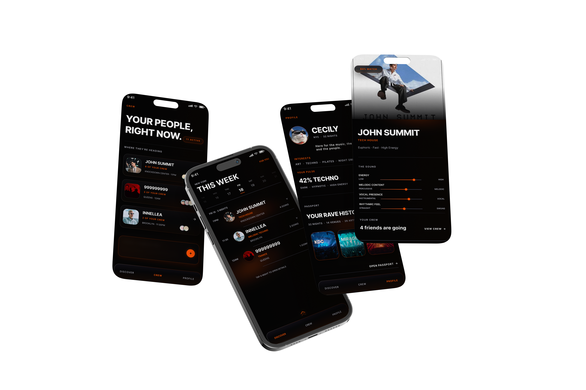

Independent Product Design
PULSE

Nightlife discovery and planning
View in FigmaPULSE is a nightlife discovery app designed to help ravers understand unfamiliar DJs, find events that match their music taste, and see where their friends are going before committing to a night out.
01 / The Problem
Event Selection Problem
Event listings provide basic information, but not enough context to judge whether an event is personally relevant.
Unfamiliar DJs make it difficult for users to understand what an event will actually sound and feel like.
Music taste, event vibe, and friend activity are spread across different platforms.
Users must piece together this information manually before deciding where to go.
The result is a fragmented and high-friction decision process.
Unfamiliar Artists
A lineup can include dozens of artists, but recognizing a name and understanding their sound are two different things.
Users often leave the event app and search Spotify, SoundCloud, Instagram or YouTube before deciding.
Fragmented Social Context
Rave communities are often large and loosely connected. Friends may split across several events on the same night, making it difficult to know where everyone is heading.
Group Decision Friction
Group chats repeatedly cycle through the same questions: Who is this DJ? What do they play? Who’s going? Which event are we choosing?
02 / Research & Insight
Nightlife Planning Behaviours
The initial problem came from my own experience navigating nightlife in New York.
Finding events was rarely difficult. The friction appeared after discovery: comparing unfamiliar artists, checking their sound, figuring out the vibe, and asking where friends were going.
I also looked at how people in my own rave circle planned nights out and noticed the same tools appearing repeatedly across the decision process.
- DiscoverBrowse event platforms to see what is happening and build an initial shortlist.
- ResearchOpen Spotify or SoundCloud to hear unfamiliar artists and compare their sound.
- Vibe CheckUse Instagram and artist content to understand the visual tone, crowd energy, and atmosphere.
- Social CheckCheck group chats and DMs to learn where friends are going and coordinate plans.
- DecideCombine sound, vibe, and social context to choose the event that feels right.
Key Insight
Fragmented Decision-Making
Audio Before Genre Labels
Users may not always understand genre terminology, but they usually know what they like when they hear it.
Vibe-Based Preferences
People often describe music through feelings such as dark, groovy, hypnotic or euphoric rather than strict genre labels.
Friend Activity as Context
An event becomes more relevant when users know that people they care about are already planning to attend.
Users moved between event listings, music platforms, social media, and group chats before choosing an event. PULSE brings those decision signals into one product.
03 / Design Opportunity
Design Opportunity
Event listings often foreground artist names, dates and venues, but offer limited help in understanding how the music will actually feel. For someone exploring unfamiliar DJs, this creates a gap between finding an event and knowing whether it is worth attending.
PULSE connects musical context, personal preferences and friend activity to support that decision.
How might we help ravers evaluate unfamiliar artists, narrow down relevant events, and decide where to go with greater confidence?
Discover
Relevant Event Discovery
Support two browsing needs: exploring events on a specific date and narrowing down recommendations for a night out. Date-based discovery and the Tonight feed provide distinct entry points, allowing users to browse broadly or review one option at a time.
Understand
Artist and Music Context
Bring music previews, style descriptions and taste match into the artist experience. Clear information hierarchy helps users move from a quick impression to a closer evaluation, rather than relying on a DJ’s name or a genre label alone.
Decide
Saved Events and Attendance
Distinguish saving an event from committing to attend. Saved Dates lets users revisit possibilities, while friend activity adds social context. “I’m Going” provides a clear attendance state, helping users move from considering an event to choosing it.
04 / Product Strategy
Product Strategy
The strategy reduces uncertainty between finding an event and deciding to attend.
The product focuses on four decision signals: personal taste, relevance, sound, and social context.
01 / Personalization
Your Pulse
Build preference from behavior, not self-reported labels.
Instead of asking users to define their taste through a long genre questionnaire, PULSE learns from short audio reactions, vibe selections, saves, skips, and past activity.
Strategic role
Create a taste model that becomes more useful over time while keeping onboarding lightweight.
Design implication
Ask users to react to music before asking them to describe it.
02 / Relevance
Match Score
Translate taste data into an immediately understandable signal.
A recommendation system has little value if the user cannot understand how it affects their choices. Match Score brings personalization directly into the event list.
Strategic role
Reduce the effort required to compare unfamiliar events.
Design implication
Surface relevance at the point of discovery rather than hiding it inside a recommendation engine.
03 / Understanding
Music Preview
Make the most important evidence available at the moment of evaluation.
For unfamiliar artists, genre labels and descriptions are often not enough. A short audio preview gives users a faster way to understand what an event may actually feel like.
Strategic role
Reduce dependency on external platforms during the decision journey.
Design implication
Keep listening inside the browsing flow instead of forcing users to switch apps.
04 / Social Context
Crew
Use friend activity as decision context, not as a social feed.
Knowing that friends are already considering an event can meaningfully change its relevance. PULSE surfaces this information only when it supports a decision.
Strategic role
Turn fragmented group-chat coordination into lightweight planning context.
Design implication
Show social information beside the event, not in a separate social network experience.
05 / Product Structure
Product Structure
Tonight
- Discover DJs through a personalised card feed.
- Save or pass to narrow down your options.
- Revisit saved events and mark “I’m going.”
Discovery
- Browse events by date.
- Explore each DJ’s sound, style and taste match.
- Preview music and decide whether to join.
Crew
- Find and add friends.
- Compare music tastes and see where friends are going.
- Explore their nights out through personal Passports.
Profile
- See your evolving music taste profile.
- Express your identity through interests and a personal bio.
- Revisit past nights, venues and artists in your Passport.
06 / User Flow

07 / Lo-Fi Design
Early Product Direction
Low-Fidelity Wireframes
Before defining the visual language, I focused on the decision flow: how much information should appear at each step, when users need more context, and how to reduce unnecessary navigation.


08 / Hi-Fi Design
Final Interface
High-Fidelity Interface
Once the product structure was defined, I developed a visual and interaction system built around nightlife, sound and decision-making.
The final interface uses a near-black environment with orange reserved for active, selected and high-confidence states.
01 / Learn
Taste Onboarding
New users begin with a short taste test, helping them discover which sounds and nightlife styles they are most likely to enjoy.


01 / 03
02 / Tonight
Tonight Recommendation Feed
Tonight turns a long lineup into a focused decision loop. Users review one DJ at a time, then swipe left to pass or right to save.
- A single-card view reduces comparison overload and keeps attention on the current recommendation.
- Match score, genre, and event time remain visible so every swipe is an informed choice.
- Saving builds a lightweight shortlist without interrupting discovery, helping users move from browsing to a plan.
03 / Discover
Event Discovery
Discover keeps browsing lightweight while giving users more context only when an event starts to feel relevant.


04 / Profile
Profile and Passport
Profile and Passport turn previous events, venues and artists into part of the user’s evolving nightlife identity.


Design Decisions
Key Product Decisions
Audio-Based Taste Setup
A traditional onboarding flow could ask users to select genres from a checklist. Instead, I designed onboarding around short audio samples and simple reactions.
Users may not know how to label their taste, but they usually know what they like when they hear it.
Motion as Selection Feedback
Genre alone cannot describe the emotional quality of a night. Unselected vibe preferences gently move while selected preferences become visually stable and gain an orange edge glow.
Motion communicates state rather than simply decorating the interface.
Contextual Friend Activity
Friend activity appears beside the events users are already considering, helping reduce uncertainty without shifting the focus away from the event.